Adaptive Research Modeling · 2026
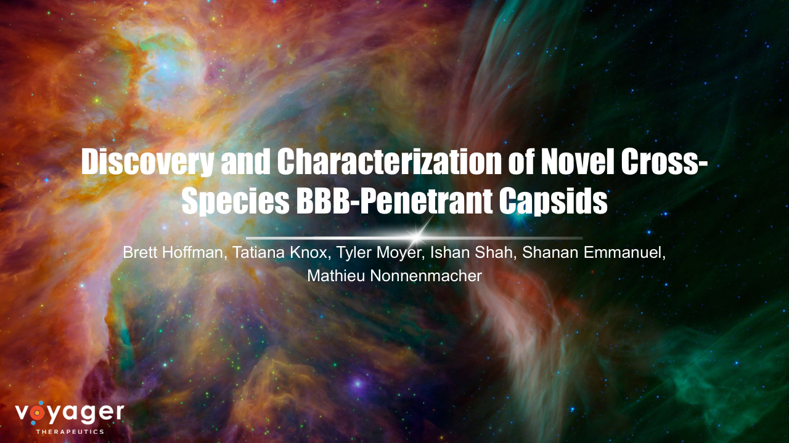
Discovery and Characterization of Novel Cross-
Species BBB-Penetrant Capsids
Brett Hoffman, Tatiana Knox, Tyler Moyer, Ishan Shah, Shanan Emmanuel,
Mathieu Nonnenmacher
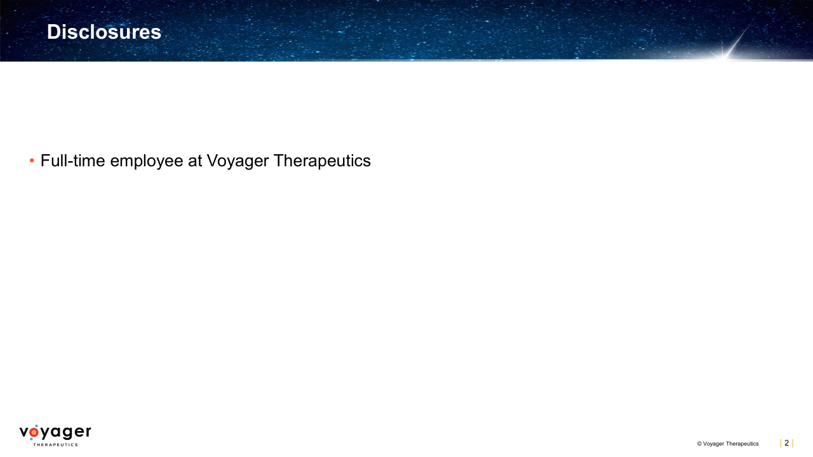
Disclosures
• Full-time employee at Voyager Therapeutics
© Voyager Therapeutics | 2 |
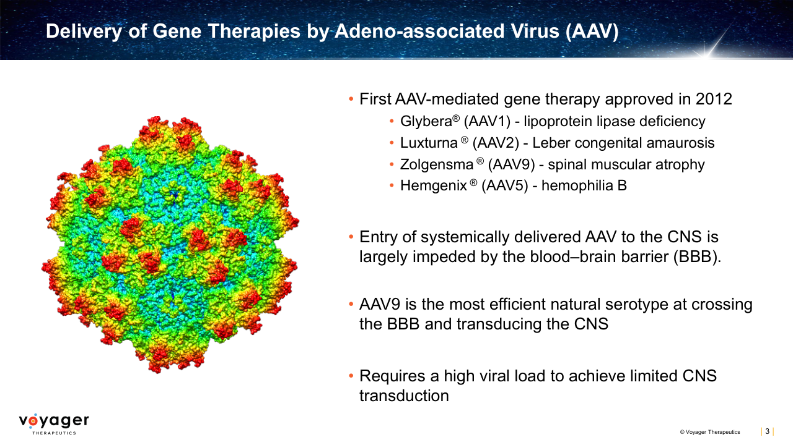
Delivery of Gene Therapies by Adeno-associated Virus (AAV)
• First AAV-mediated gene therapy approved in 2012
• Glybera® (AAV1) - lipoprotein lipase deficiency
• Luxturna ® (AAV2) - Leber congenital amaurosis
• Zolgensma ® (AAV9) - spinal muscular atrophy
• Hemgenix ® (AAV5) - hemophilia B
• Entry of systemically delivered AAV to the CNS is largely impeded by the blood–brain barrier (BBB).
• AAV9 is the most efficient natural serotype at crossing
the BBB and transducing the CNS
• Requires a high viral load to achieve limited CNS transduction
© Voyager Therapeutics | 3 |
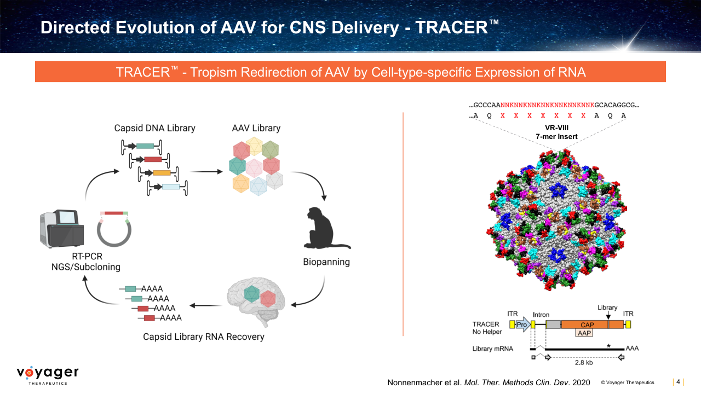
Directed Evolution of AAV for CNS Delivery - TRACER™
TRACER™ - Tropism Redirection of AAV by Cell-type-specific Expression of RNA
VR-VIII 7-mer Insert
Nonnenmacher et al. Mol. Ther. Methods Clin. Dev. 2020 © Voyager Therapeutics | 4 |
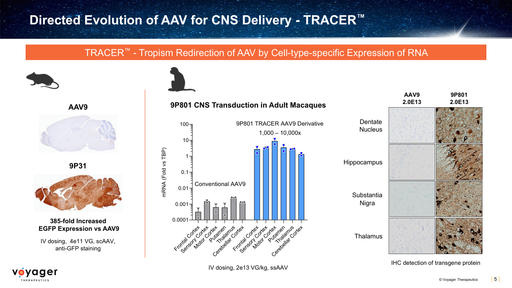
Directed Evolution of AAV for CNS Delivery - TRACER™
TRACER™ - Tropism Redirection of AAV by Cell-type-specific Expression of RNA
AAV9 9P801 2.0E13 2.0E13 9P801 CNS Transduction in Adult Macaques AAV9 Dentate 100 Nucleus 10
1 Hippocampus 9P31 0.1
0.01 Substantia 0.001 Nigra
385-fold Increased 0.0001 x x x n s x x x x n s x EGFP Expression vs AAV9 e e e e u e e e e e u e IV dos a in n g ti- , G 4 F e P 1 1 s t V ai G ni , n s g cAAV, Fr o nt a e l n C s o o r r y t M C o o t o rt r C o P rt ut a T m e h b a e l a ll m ar C F o r r o t nt a e l n C s o o r r y t M C o o t o rt r C or P t ut a T m e h b a e l a ll m ar C ort Thalamus S er S er C C IV dosing, 2e13 VG/kg, ssAAV © Voyager Therapeutics | 5 | )PBT sv dloF( ANRm 9P801 TRACER AAV9 Derivative 1,000 – 10,000x Conventional AAV9 IHC detection of transgene protein
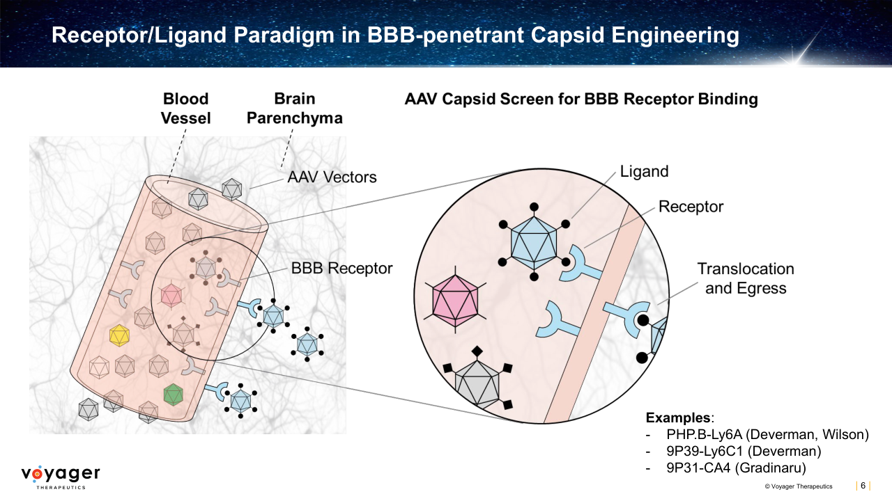
Receptor/Ligand Paradigm in BBB-penetrant Capsid Engineering
Examples:
- PHP.B-Ly6A (Deverman, Wilson) - 9P39-Ly6C1 (Deverman) - 9P31-CA4 (Gradinaru)
© Voyager Therapeutics | 6 |
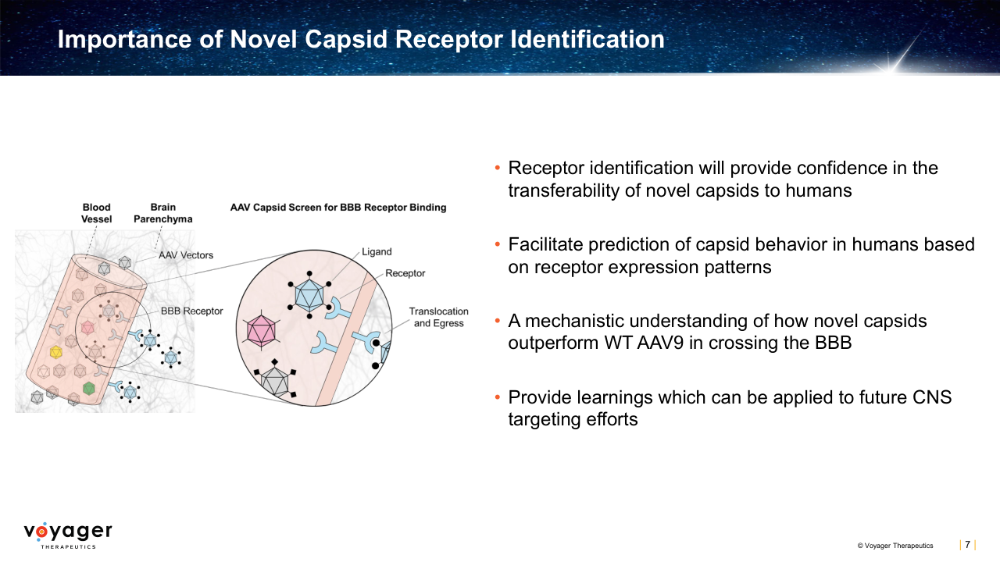
Importance of Novel Capsid Receptor Identification
• Receptor identification will provide confidence in the
transferability of novel capsids to humans
• Facilitate prediction of capsid behavior in humans based on receptor expression patterns
• A mechanistic understanding of how novel capsids
outperform WT AAV9 in crossing the BBB
• Provide learnings which can be applied to future CNS
targeting efforts
© Voyager Therapeutics | 7 |
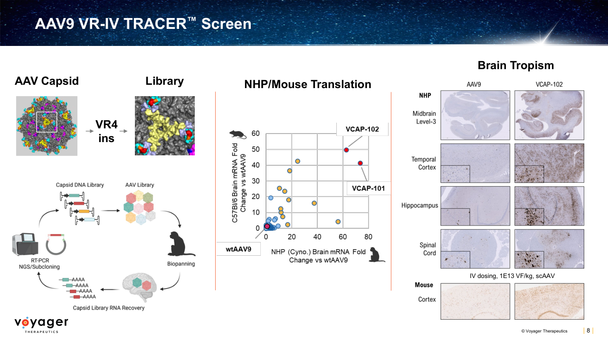
AAV9 VR-IV TRACER™ Screen
Brain Tropism AAV Capsid Library NHP/Mouse Translation
IV dosing, 1E13 VF/kg, scAAV
© Voyager Therapeutics | 8 |
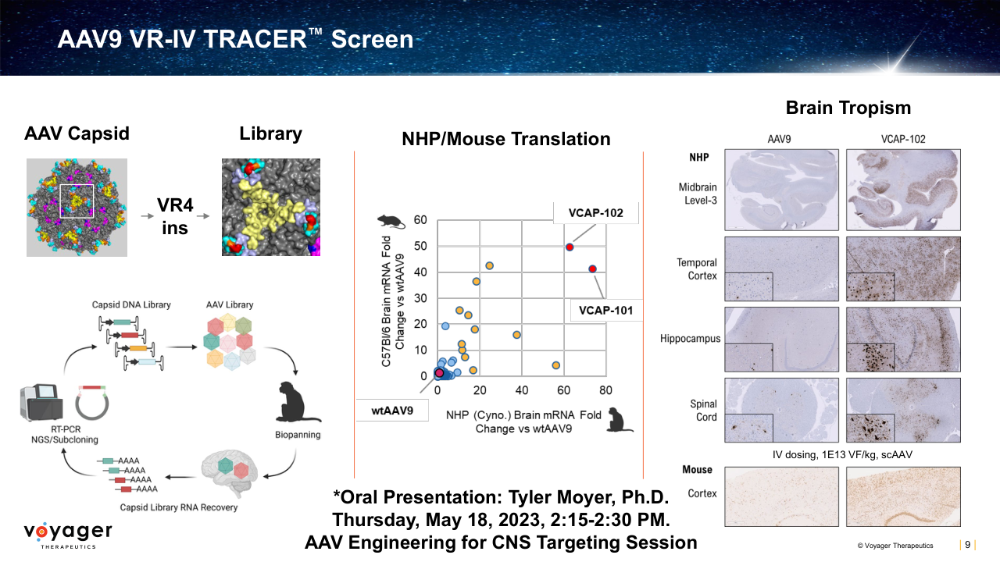
AAV9 VR-IV TRACER™ Screen
Brain Tropism AAV Capsid Library NHP/Mouse Translation
IV dosing, 1E13 VF/kg, scAAV
*Oral Presentation: Tyler Moyer, Ph.D.
Thursday, May 18, 2023, 2:15-2:30 PM.
AAV Engineering for CNS Targeting Session © Voyager Therapeutics | 9 |
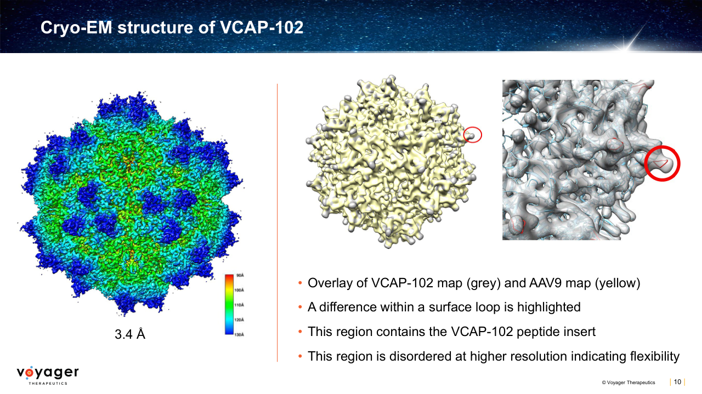
Cryo-EM structure of VCAP-102
• Overlay of VCAP-102 map (grey) and AAV9 map (yellow)
• A difference within a surface loop is highlighted
• This region contains the VCAP-102 peptide insert 3.4 Å • This region is disordered at higher resolution indicating flexibility
© Voyager Therapeutics | 10 |
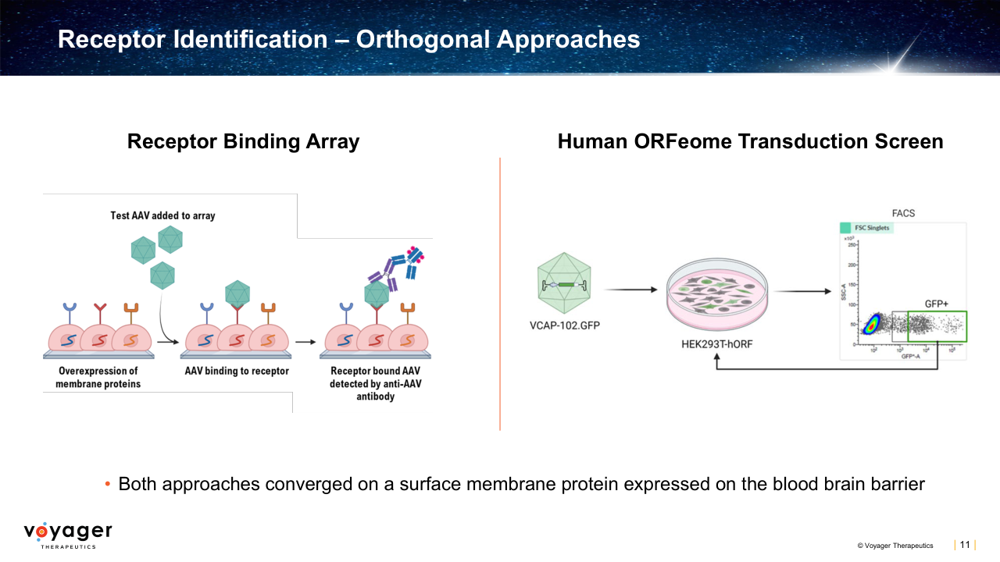
Receptor Identification – Orthogonal Approaches
Receptor Binding Array Human ORFeome Transduction Screen
• Both approaches converged on a surface membrane protein expressed on the blood brain barrier
© Voyager Therapeutics | 11 |
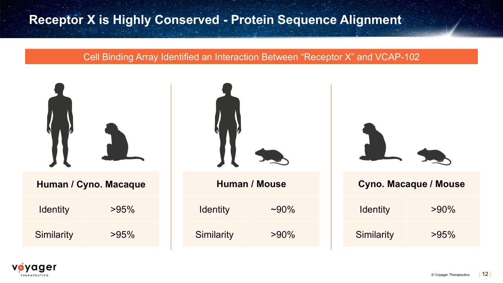
Receptor X is Highly Conserved - Protein Sequence Alignment
Cell Binding Array Identified an Interaction Between “Receptor X” and VCAP-102
Human / Cyno. Macaque Human / Mouse Cyno. Macaque / Mouse
Identity >95% Identity ~90% Identity >90%
Similarity >95% Similarity >90% Similarity >95%
© Voyager Therapeutics | 12|
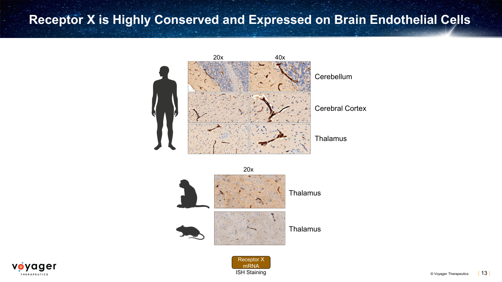
Receptor X is Highly Conserved and Expressed on Brain Endothelial Cells
Cerebellum
Cerebral Cortex
ReceptorX mRNA ISH Staining © Voyager Therapeutics | 13|
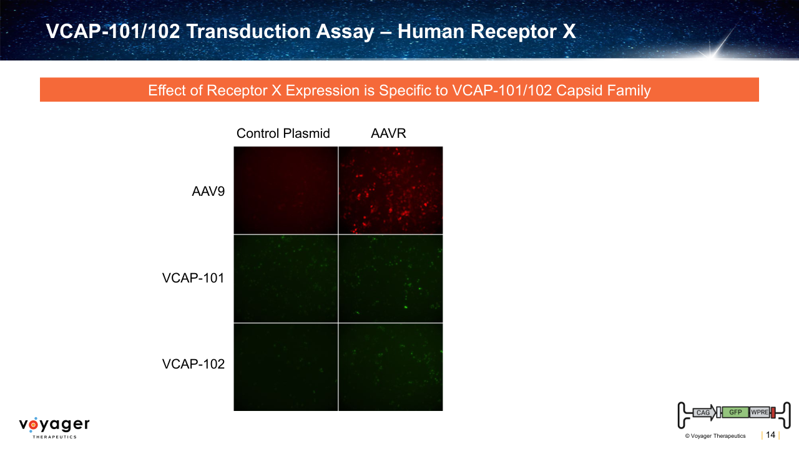
VCAP-101/102 Transduction Assay – Human Receptor X
Effect of Receptor X Expression is Specific to VCAP-101/102 Capsid Family
Control Plasmid AAVR
© Voyager Therapeutics | 14|
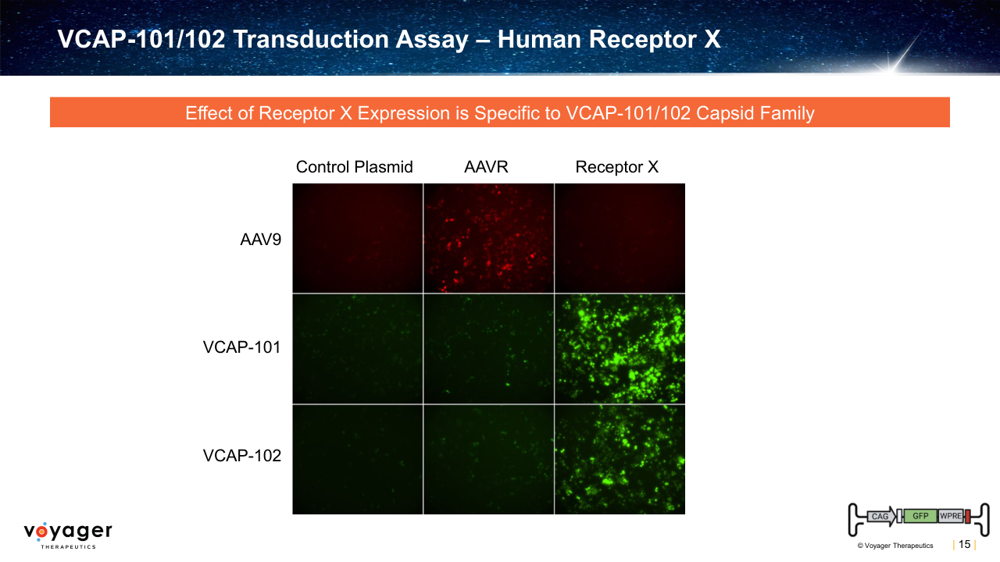
VCAP-101/102 Transduction Assay – Human Receptor X
Effect of Receptor X Expression is Specific to VCAP-101/102 Capsid Family
Control Plasmid AAVR Receptor X
© Voyager Therapeutics | 15|
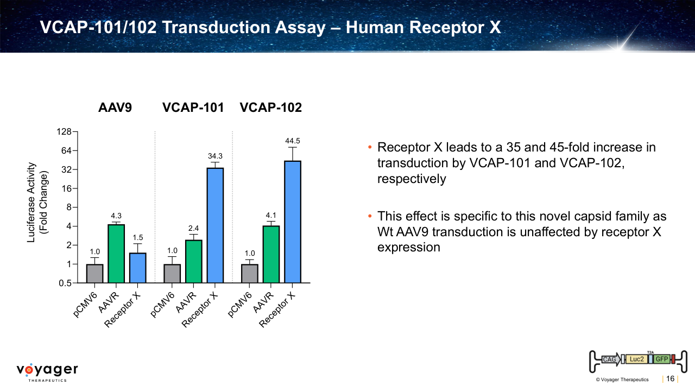
VCAP-101/102 Transduction Assay – Human Receptor X
AAV9 VCAP-101 VCAP-102
128 44.5 64 34.3 32
8 4.3 4.1 4 2.4 1.5 2 1.0 1.0 1.0 1 0.5 6 R X 6 R X 6 R X M V A V o r M V A V o r M V A V o r C A pt C A pt C A pt p e p e p e c c c e e e R R R
© Voyager Therapeutics | 16| ytivitcA esareficuL )egnahC dloF( • Receptor X leads to a 35 and 45-fold increase in transduction by VCAP-101 and VCAP-102, respectively • This effect is specific to this novel capsid family as Wt AAV9 transduction is unaffected by receptor X expression
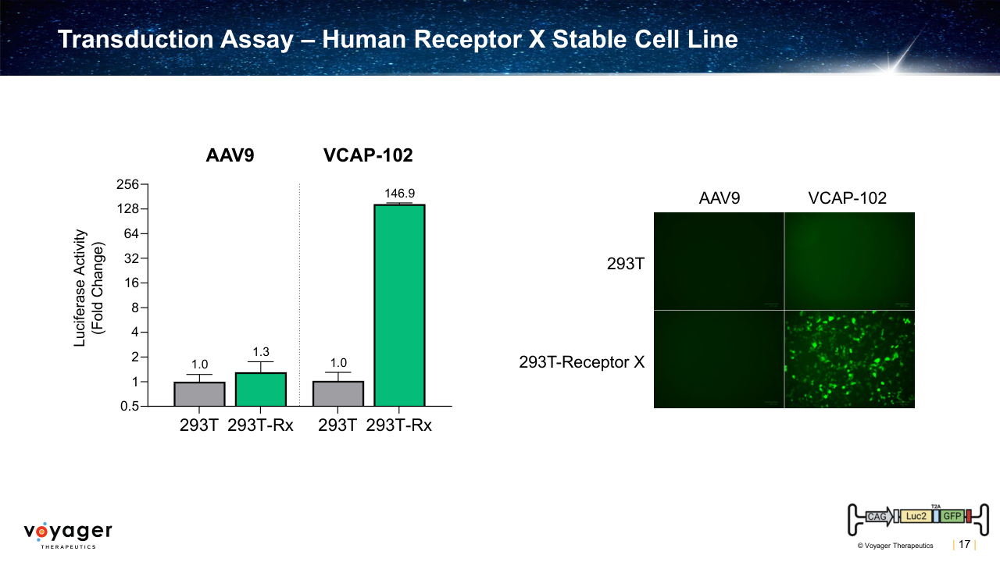
Transduction Assay – Human Receptor X Stable Cell Line
AAV9 VCAP-102
256 146.9 128
32 293T 16 8
1.3 2 1.0 1.0 293T-Receptor X 1 0.5 293T 293T-Rx 293T 293T-Rx
© Voyager Therapeutics | 17| ytivitcA esareficuL )egnahC dloF( AAV9 VCAP-102
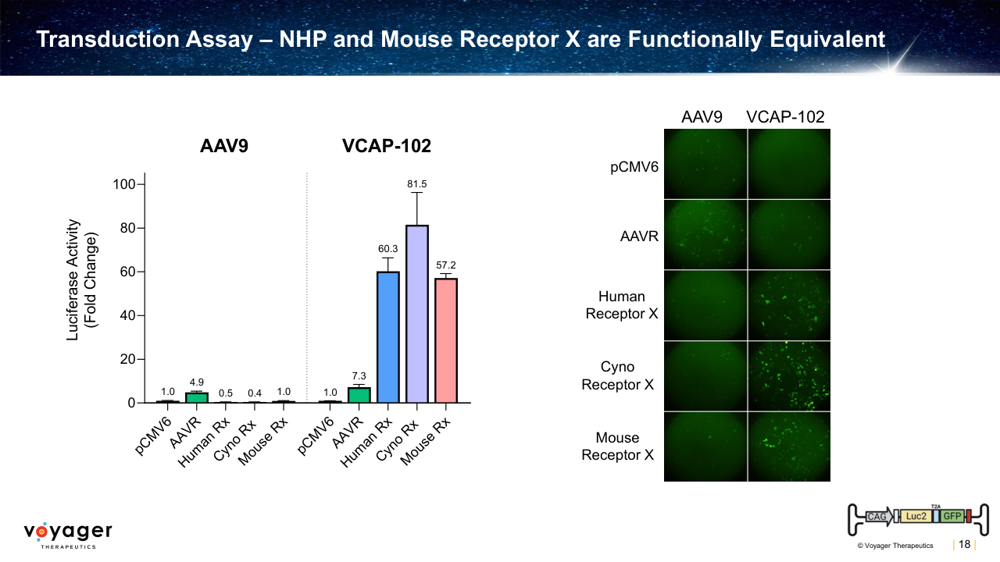
Transduction Assay – NHP and Mouse Receptor X are Functionally Equivalent
AAV9 VCAP-102
AAV9 VCAP-102
pCMV6 100 81.5
80 60.3 57.2 60
Human 40 Receptor X
20 Cyno 7.3 4.9 Receptor X 1.0 0.5 0.4 1.0 1.0 0 V 6 V R R x R x R x V 6 V R R x R x R x p C M A A u m a n C y n o M o u s e p C M A A u m a n C y n o M o u s e H H
© Voyager Therapeutics | 18| ytivitcA esareficuL )egnahC dloF( AAVR Mouse Receptor X
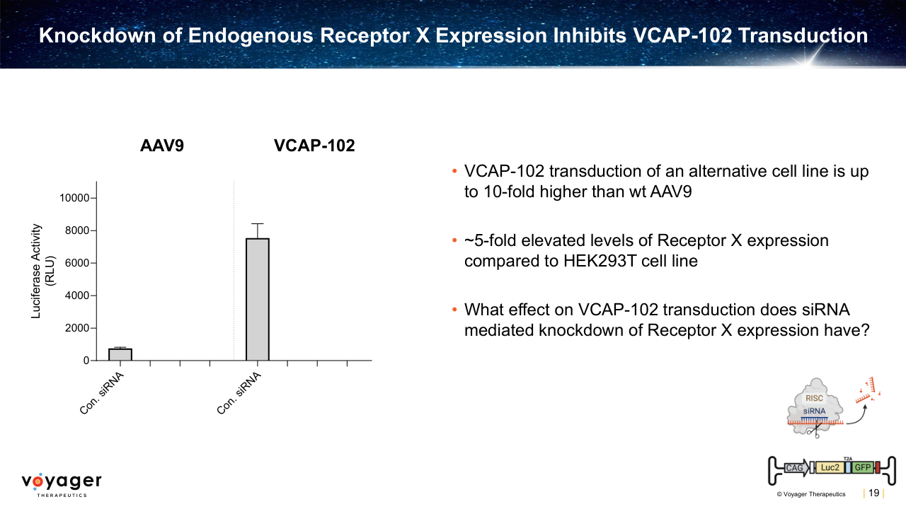
Knockdown of Endogenous Receptor X Expression Inhibits VCAP-102 Transduction
• VCAP-102 transduction of an alternative cell line is up
to 10-fold higher than wt AAV9 10000
8000 • ~5-fold elevated levels of Receptor X expression compared to HEK293T cell line 6000
4000 • What effect on VCAP-102 transduction does siRNA 2000 mediated knockdown of Receptor X expression have?
0 A A N N R R si si n. n. o o C C
© Voyager Therapeutics | 19| ytivitcA esareficuL )ULR( AAV9 VCAP-102
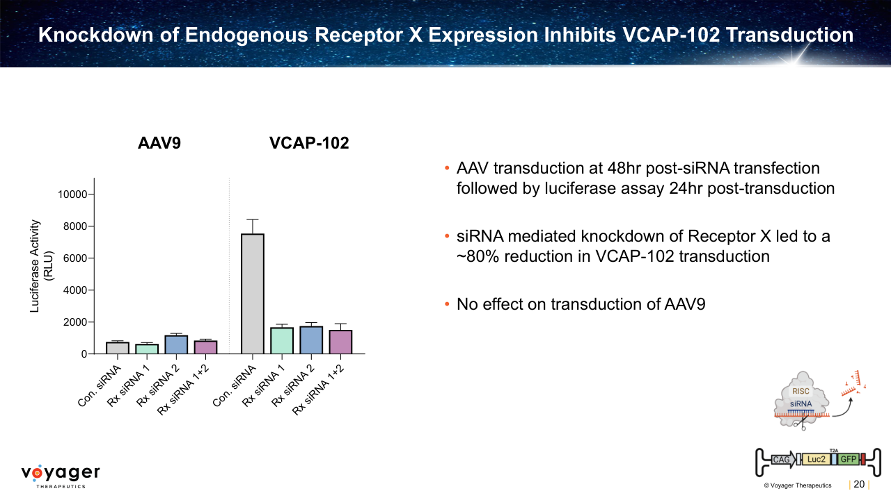
• AAV transduction at 48hr post-siRNA transfection followed by luciferase assay 24hr post-transduction 10000
8000 • siRNA mediated knockdown of Receptor X led to a
~80% reduction in VCAP-102 transduction 6000
4000 • No effect on transduction of AAV9 2000
0 A 1 2 2 A 1 2 2
C o n. si R N R x si R N A R x si R N x A s i R N A 1 + C o n. si R N R x si R N A R x si R N x A s i R N A 1 + R R © Voyager Therapeutics | 20| ytivitcA esareficuL )ULR( Knockdown of Endogenous Receptor X Expression Inhibits VCAP-102 Transduction AAV9 VCAP-102
α-Receptor X Antibody Inhibits VCAP-102 Transduction
10 0.0 2.5 5.0 7.5 10.0 12.5 15.0 Ab Concentration (µg/mL)
© Voyager Therapeutics | 21| )ULR( ytivitcA esareficuL AAV9 - α-Rx AAV9 - IgG con. VCAP-102 - α-Rx VCAP-102 - IgG con. 0 µg/mL 3.125 µg/mL 6.25 µg/mL 12.5µg/mL α-Receptor X VCAP-102 IgG Isotype Control
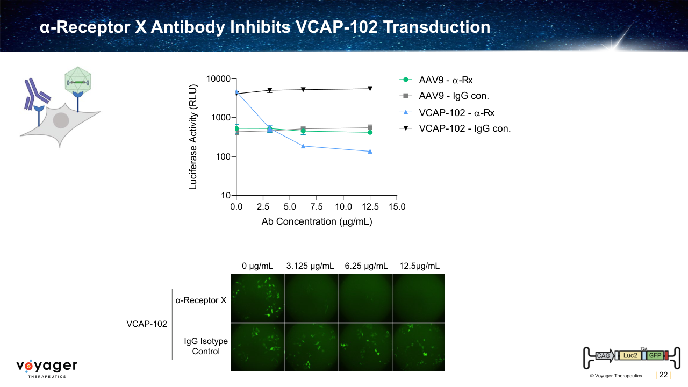
α-Receptor X Antibody Inhibits VCAP-102 Transduction
10 0.0 2.5 5.0 7.5 10.0 12.5 15.0 Ab Concentration (µg/mL)
© Voyager Therapeutics | 22| )ULR( ytivitcA esareficuL AAV9 - α-Rx AAV9 - IgG con. VCAP-102 - α-Rx VCAP-102 - IgG con. 0 µg/mL 3.125 µg/mL 6.25 µg/mL 12.5µg/mL α-Receptor X VCAP-102 IgG Isotype Control
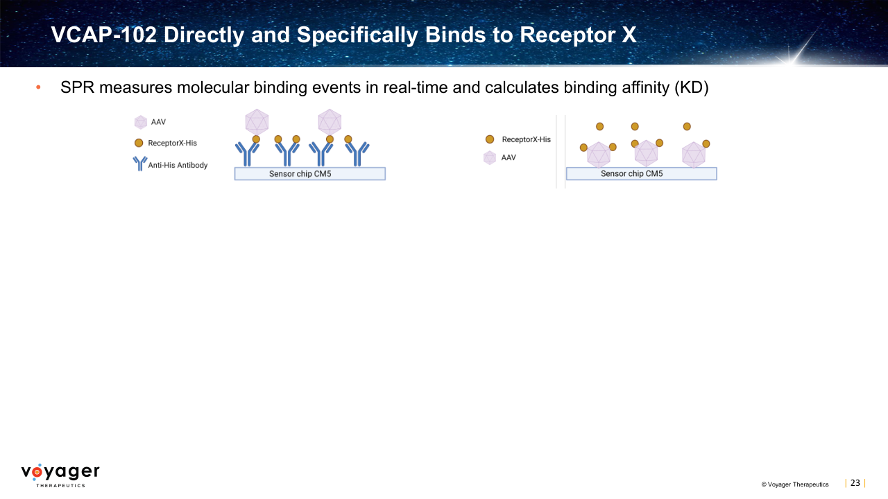
VCAP-102 Directly and Specifically Binds to Receptor X
• SPR measures molecular binding events in real-time and calculates binding affinity (KD)
© Voyager Therapeutics | 23|
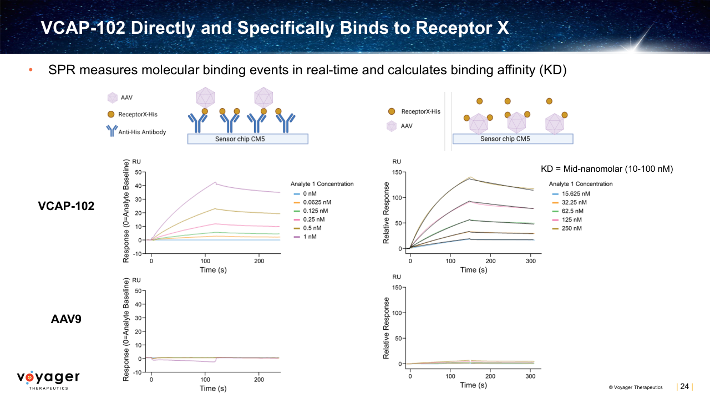
VCAP-102 Directly and Specifically Binds to Receptor X
• SPR measures molecular binding events in real-time and calculates binding affinity (KD)
KD = Mid-nanomolar (10-100 nM)
© Voyager Therapeutics | 24|
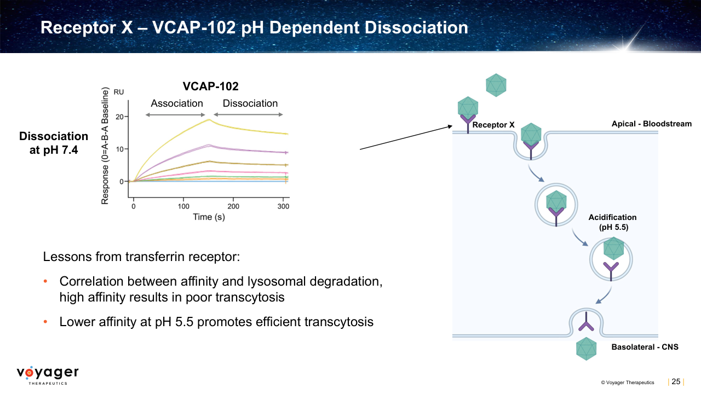
Receptor X – VCAP-102 pH Dependent Dissociation
Association Dissociation
Receptor X Apical -Bloodstream Dissociation at pH 7.4
Acidification (pH 5.5)
Lessons from transferrin receptor:
• Correlation between affinity and lysosomal degradation,
high affinity results in poor transcytosis
• Lower affinity at pH 5.5 promotes efficient transcytosis
Basolateral -CNS
© Voyager Therapeutics | 25|
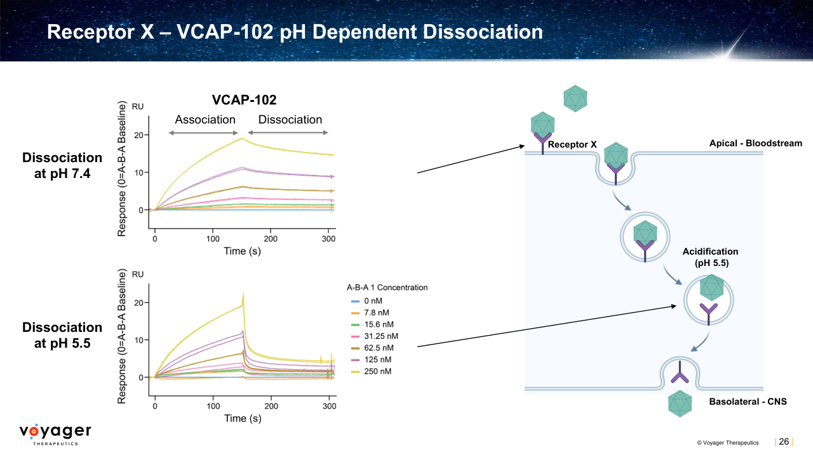
Receptor X – VCAP-102 pH Dependent Dissociation
Association Dissociation
Receptor X Apical -Bloodstream Dissociation at pH 7.4
Acidification (pH 5.5)
Dissociation
at pH 5.5
Basolateral -CNS
© Voyager Therapeutics | 26|
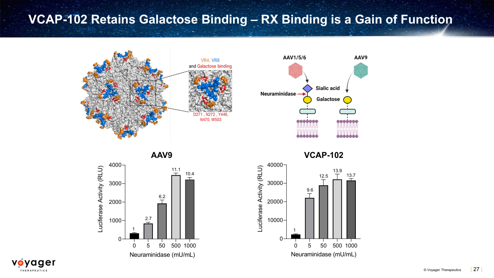
VCAP-102 Retains Galactose Binding – RX Binding is a Gain of Function
AAV9 VCAP-102 4000
0 0 5 50 500 1000
Neuraminidase (mU/mL)
© Voyager Therapeutics | 27| )ULR( ytivitcA esareficuL 40000 11.1 10.4 30000 6.2 20000 2.7 10000 1 0 0 5 50 500 1000 Neuraminidase (mU/mL) )ULR( ytivitcA esareficuL 13.9 12.5 13.7 9.6 1
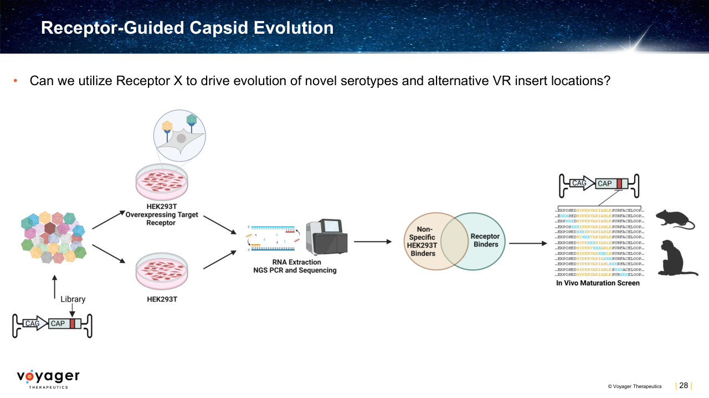
Receptor-Guided Capsid Evolution
• Can we utilize Receptor X to drive evolution of novel serotypes and alternative VR insert locations?
© Voyager Therapeutics | 28|
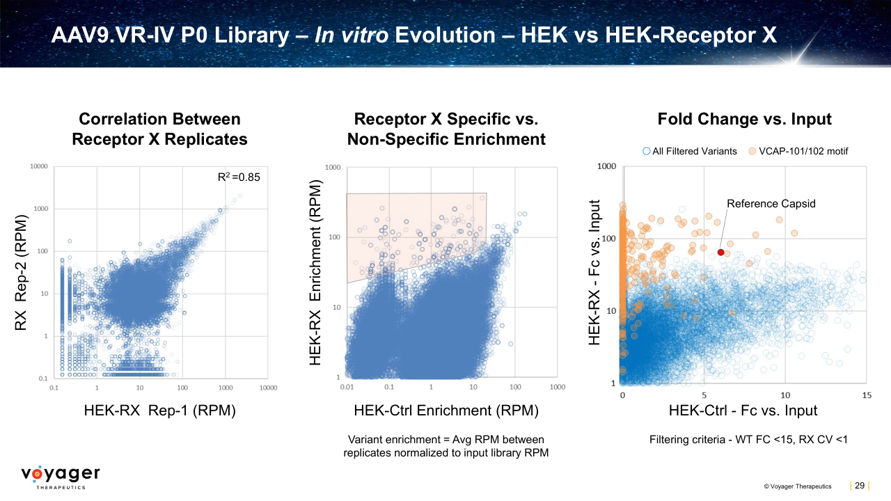
AAV9.VR-IV P0 Library – In vitro Evolution – HEK vs HEK-Receptor X
HEK-Ctrl Enrichment (RPM)
© Voyager Therapeutics | 29 | )MPR( 2-peR XR )MPR( tnemhcirnE XR-KEH HEK-RX Rep-1 (RPM) HEK-Ctrl - Fc vs. Input tupnI .sv cF - XR-KEH Correlation Between Receptor X Specific vs. Fold Change vs. Input Receptor X Replicates Non-Specific Enrichment All Filtered Variants VCAP-101/102 motif R2 =0.85 Reference Capsid Variant enrichment = Avg RPM between Filtering criteria - WT FC <15, RX CV <1 replicates normalized to input library RPM
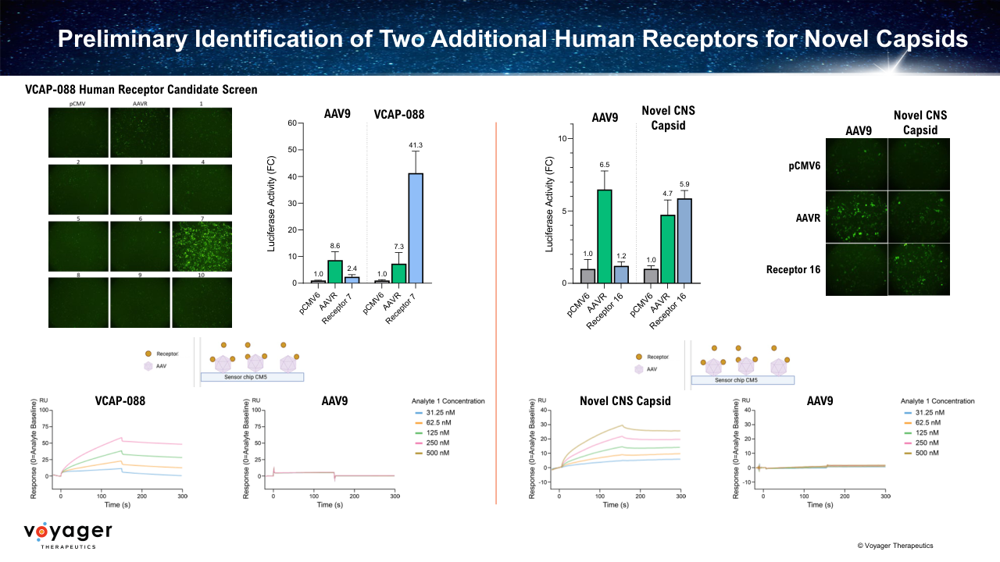
Preliminary Identification of Two Additional Human Receptors for Novel Capsids
41.3 50 40
20 8.6 7.3 10 2.4 1.0 1.0 0 M V 6 A V R or 7 M V 6 A V R or 7 p C A ece pt p C A ece pt R R
© Voyager Therapeutics )CF( ytivitcA esareficuL VCAP-088 Human Receptor Candidate Screen AAV9 VCAP-088 10 6.5 5.9 4.7 5 1.0 1.2 1.0 0 6 R 6 6 R 6 p C M V A A V e pt or 1 p C M V A A V e pt or 1 ec ec R R VCAP-088 AAV9 Novel CNS Capsid AAV9 )CF( ytivitcA esareficuL Novel CNS AAV9 Novel CNS Capsid AAV9 Capsid pCMV6 AAVR Receptor 16
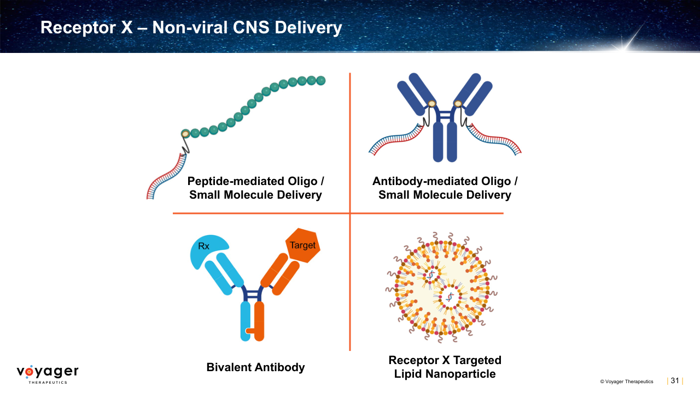
Receptor X – Non-viral CNS Delivery
Peptide-mediated Oligo / Antibody-mediated Oligo / Small Molecule Delivery Small Molecule Delivery
Receptor X Targeted Bivalent Antibody Lipid Nanoparticle © Voyager Therapeutics | 31|
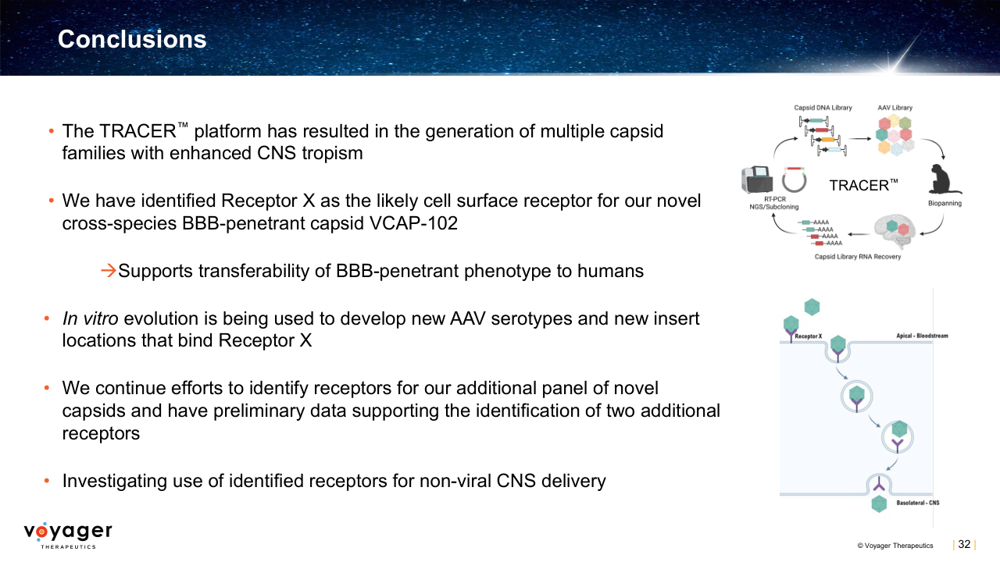
Conclusions
• The TRACER™ platform has resulted in the generation of multiple capsid
families with enhanced CNS tropism
TRACER™ • We have identified Receptor X as the likely cell surface receptor for our novel
cross-species BBB-penetrant capsid VCAP-102
Supports transferability of BBB-penetrant phenotype to humans
• In vitro evolution is being used to develop new AAV serotypes and new insert
locations that bind Receptor X
• We continue efforts to identify receptors for our additional panel of novel
capsids and have preliminary data supporting the identification of two additional
receptors
• Investigating use of identified receptors for non-viral CNS delivery
© Voyager Therapeutics | 32|
If you would like more information,
Thank you! please contact:
Brett Hoffman Questions? bhoffman@vygr.com